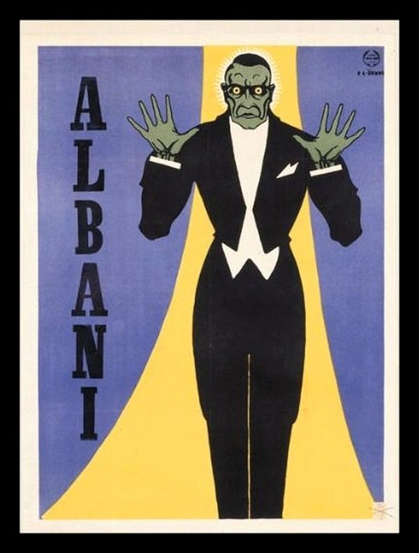
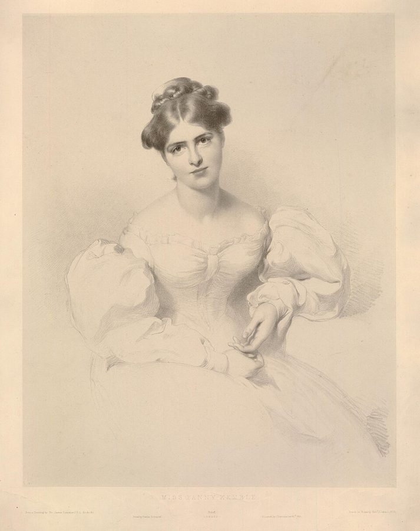

in possession of ourselves
… if we don’t seem immediately in possession of ourselves …
译本：「如果我们突然出现了不属于自己的行为」
（要是我们）没能马上显得镇定自若
in possession of oneself 是「把持得住自己、镇定」。在讲附身的一篇里用它是双关：平时我们得时刻「占有」自己，稍一走神，别人就笑。译本传不出这一层。
这三节是全书最像心理学理论的地方。作者想回答：戴上面具的人，为什么像换了一个人？他先拿几位名演员的自述、一个坚称没被催眠的催眠师助手、乒乓球和一声敲门，说明人比自己以为的更常「出神」；再讲人怎样进去、怎样出来；最后拿海地、巴厘岛的附身仪式和面具课逐条对照。读的时候抓两条线：作者说的 trance（本站叫「出神」）包得有多宽；他怎样把一切都接回「地位」和「不用负责」。

上一页（§1–§4）讲面具从哪来、为什么不算怪，停在照镜子的那一刻：面具好像要接管你，老师催你别停。作者在 §1 就说过，要懂面具，得先懂出神。这一页就退一步讲出神本身。下一页（§8）把这里的理论落成一节面具课：老师演高、先说清学生不用负责、镜子和道具。§7 结尾说神像孩子，下一页的新面具也像婴儿。
作者把演员入戏、开车走神、打乒乓球、催眠和宗教附身都叫 trance，还认为附身是催眠式出神的一种，差别在有观众捧场。这是他教面具的工作假设，今天的心理学和人类学都不把这些归成一类。
人为什么会一时「不是自己」，又是什么把他拉回来？
读的时候带着这几个问题。不用先找答案，读完回来对照「检查一下理解」。
§5 从三位女演员的自述起步，拿失忆和「时间跳跃」当出神的记号，插进一个怎么也不承认被催眠的橱窗助手，然后才给出全页的钥匙：人格像公关部。§6 把问题倒过来问（我们怎样才不出神），从肌肉讲到催眠师的几个小把戏，再落到「不用负责」和挡住脑子里的话，结尾的跺步和人群说得很快。§7 最长，一大半是别人的文字：黛伦、辛普森、梅特罗、贝洛的记录，作者的话夹在中间，多以「我认为」「我怀疑」开头。他先定义「受控出神」，再一路对照附身和面具，中间突然跳到德尔斐和南印度，最后停在「神像孩子」。
作者落在哪：出神不是怪事，是「人格」暂时不当班。一旦确信不必为自己的行为负责，又有一个你接受的高地位者接手，人就容易出神；附身，他认为就是有观众和回报的出神，附身的神像面具一样孩子气。
这一页是原书和译本「面具与催眠」一篇的 §5–§7。粗体是本站给的节名，下面是译本的节号和小标题、这一节在译本电子书中开头的几个字（搜它就能跳过去），再下面是英文原文的开头。每节标了档：「先读」是这本书最精彩、不读就错过的，「有空」好看但跳过不丢线。读完打个勾。
先把这一页用到、作者默认你懂的几个概念讲一遍。讲的是概念本身，作者拿它推出什么，读原书时自己看。
中文说「出神」「入神」，指人一时忘了自己：看书看到没听见有人叫，开车开过了路口，想不起是怎么开过来的。今天的心理学没有一个统一的「出神状态」，而是分开研究：沉浸（absorption，全神贯注于一件事）、心流、走神、解离（觉得自己和身体或周围脱了节）；催眠（hypnosis）是在催眠师引导下更容易接受暗示；宗教里的附身（possession），是当事人和身边的人相信有神灵接管了身体。
作者的 trance 一口气把这些都包了进去：只要平时那个盯着别人眼光的「自己」不在掌舵，就算。这是作者的用法。译本一律作「催眠」，本站叫「出神」；读到译本的「催眠」，先想一想原文是 trance 还是 hypnosis。
在这一页：§5 用失忆和时间跳跃来认出它，§6 讲怎样进去，§7 把附身算作它的一种。这一页读到的「催眠」，多数指它。
心理学说的人格（personality），是一个人稳定的性格特点，比如外向还是内向。作者用这个词指另一样东西：随时照看「别人怎么看我」的那个部分，他把它比作真实心灵的公关部。日常的例子：一个人在家对着电脑抓耳挠腮，门铃一响，他马上坐直、理头发、换上一副见人的表情，这就是公关部上班了。
社会学家 Goffman 1959 年的《日常生活中的自我呈现》把人在别人面前的表现比作舞台上的演出，心理学后来又有「自我监控」（self-monitoring）一说，都和作者的意思相通。作者比他们走得远：他认为这个部分一退场，人就出神了。
在这一页：§5 最后一段的敲门立起它；§6、§7 讲的各种进入出神的办法，在作者看来都是让它下班。
催眠研究里，induction 指正式暗示之前的那一套开场：让人坐好，盯住一个点，放松，听着「你越来越困」。它和暗示本身是两回事。后来的实验发现，这套开场只让人更容易接受暗示一点点；差别主要在人：不经催眠也容易被暗示带走的人，被催眠时也容易。
作者把这个词用得更宽：凡是能把人送进出神的办法都算，静止、放松、被弄糊涂、一个让你服气的高地位者、只念一个词、跺步、人群。这些办法今天的研究大多分开看，有的是宗教和冥想的传统，有的属于催眠，有的是生理反应。
在这一页：§6 整节都在列诱导的办法；§7 萨金特说附身是大脑受压后的保护性崩溃，作者也只当它是又一种进入的路子。
人类学家把世界各地的出神大致分成两类：一类是神志恍惚、看见异象，另一类是相信有神灵进入身体、借这个人说话行事，后一类就是附身。一份覆盖 488 个社会的跨文化调查发现，约九成有某种文化认可的出神行为或信仰。在这些地方出神有规矩：谁可以进入、什么时候进入、由谁唤醒，都由祭司和会众说了算。
作者说的「受控出神」就是这个意思：许可由别人给，也由别人收回。今天美国精神病学会的诊断手册也照这个思路，把属于公认文化或宗教习俗的附身，排除在解离障碍之外。
在这一页：§7 开头作者给它下定义，然后拿附身仪式和面具课逐条对照；下一页的面具课也照这个办法，由老师给许可、老师收场。
作者在课上用过、照着就能玩的；个别几张是本站照书里的段落改的，卡里写明了来历。几个人、怎么玩、看什么写在卡片上；「先猜」那一栏是书里的课堂上发生了什么，先自己猜，或者先玩一次，再点开。全书的游戏卡汇总在游戏汇总。
作者说，这样放松下去很容易飘进幻想，身体的形状、质地像变了，好像不是你在呼吸，而是空气在呼吸你。可只要觉得房间里有一个对你不怀好意的人，这种状态马上就破了：你会重新抓住对肌肉的控制，又变回「自己」。他拿这个说明，我们靠控制肌肉来保持平常的意识。
本站的提醒：这和常见的放松练习差不多，一般没有风险。要是你正被焦虑、创伤之类的问题困扰，放松时冒出不舒服的感觉就停下来；别把它当成自我催眠，去追求「更深」的状态。这个放松本身可以一个人做；作者在 §14 说过，好的表演训练可能让人一时觉得自己「散了架」，所以面具和更深的出神练习要有经验、沉得住气的老师带，别自己对着镜子做。
作者说你会觉得它开始「肿」起来，他猜这是错觉，是捏的那只手肌肉渐渐乏力造成的。只要被试不知道没人暗示也会这样，催眠师就能拿它当诱导：把一个本来就会有的感觉说成是自己造成的，你就更容易交出控制。眼皮变沉、手臂变重，他说也是一个道理。
译本：「假装被催眠」
作者说，被要求假装被催眠的即兴学生会突然进步，假装当催眠师的却没有。他的解释是：一旦明白自己的行为不再被追究，就用不着维持「人格」了。书里只有这么两三句，没写课上的细节，上面的玩法是本站补的。
作者在注里说，这样做压不住脑子里的话，但能把它引开。他把这一类办法归在「干扰语言思考」底下：反复唱诵、心里只念一个词，都能帮人进入出神。他还引了 14 世纪英国一本灵修书，书里教人只念一个单音节的词。
按在书里出现的顺序排，标题前是节号。只讲到读懂这一页需要的程度。

作者引这三段，是要说明「被角色附身」的体验，在正统的演员那里也有，只是没人这么叫。Kemble 的话转引自 1888 年 William Archer 研究演员心理的书，那本书问的正是演员演戏时动不动真情；后两段出自 1967 年 BBC 出版的访谈集《伟大的表演》。
二十世纪中叶，英国和美国的剧院里常有舞台催眠表演：催眠师请观众上台，让他们做出各种滑稽事。作者讲的两个人都出自这个行当：一个学生坚称自己在台上愚弄了催眠师两个小时；一个催眠师的助手被放在商店橱窗里当活广告。作者不信他们的说法，用来说明一个人说自己「清醒着」，不等于真清醒。
牙买加的复兴派（Revival）教会在仪式里有一种动作叫 trumping：踏着节奏向前跺步，同时弯腰、用力出声地呼吸，常常引向附身。作者说皇家宫廷剧院演一出西印度群岛的戏时用过它，结果演员一次次真的出了神。他给的解释有两层：大家重复同样的动作和声音（群体效应），加上「血里的氧过多」。后一半今天要改一改：换气过度让人头晕、手脚发麻，主要是血里的二氧化碳降低了，不是氧多了。
海地的伏都教（Vodou，今天多这样拼，以区别于电影里的「巫毒」）是西非的信仰和天主教在奴隶制下融合出来的宗教。信徒相信神灵（lwa，书里拼作 loa）会「骑」上人，借人的身体说话行事，所以被附身的人叫「马」，黛伦的书名也由此而来。盖德（Gede）是掌管死亡和性的一族神，以爱开玩笑、贪吃出名。
作者说讲面具附身的文献几乎没有，就借了一串附身研究的材料：古罗马诗人卢坎（Lucan）的史诗《内战记》（Pharsalia）里，德尔斐神庙的女祭司被阿波罗附身（原书头一次把作者写成了另一位古罗马作家 Lucian，下一段又写对了）；美国人类学家 Mandelbaum 记的南印度 Kota 人的占卜者；英国人类学家 I. M. Lewis 的《狂喜的宗教》（1971）；生于瑞士的人类学家 Métraux 的《海地伏都教》；美国人类学家 Jane Belo 的《巴厘岛的出神》（1960）。作者的话夹在这些引文中间，读的时候分清是谁在说。
巴甫洛夫在狗身上看到，刺激强到一定程度，大脑会进入一种保护性的抑制，反应变得反常，他叫它超限抑制。Sargant 把附身、皈依、战场上的崩溃都放进这个框架，黛伦是他举的例子之一。作者只把它当作又一种进入出神的路子。今天的精神病学很少再引 Sargant：他推崇的胰岛素休克、深睡疗法后来都被弃用了。
读译本时值得翻一下原文的地方：双关、行话、口语，和译本传不出的语气。灰色斜体是原文里的一小段，在英文电子书里搜它就能找到；方框里是译本这一句的译法。译错的放在下一节「译本勘误」。
对着译本读这三节时，下面这些地方会把人读歪。方框里是译本的原句，在译本电子书里搜它就能找到；灰色斜体是英文原文那一处。只收意思错了、反了、漏了的，措辞上的出入不收。全书的勘误汇总在译本勘误。
… feign, and absolutely did endure …
译本：「这些全部都是连贯完成的」
原文结尾是「我要扮演的、而且确实在承受的痛苦」：她在真哭，同时精确地算着父亲倒下要占的地方。译本把「确实在承受」换成了一句「连贯完成」，作者引它要说明的「同时走两条线」就弱了一半。
… such actors could easily talk of …
译本：「我认为这些演员很容易被角色“附身”」
原文：换一种文化，这些演员很可能会用「被角色附身」来描述自己的体验。作者讲的是说法，不是说演员真的容易被附身。照译本读，像是作者认定有附身这回事。
… during a show at Expo 67 …
译本：「在第67届世博会上的一场表演中」
Expo 67 是 1967 年在加拿大蒙特利尔办的世界博览会，不是「第 67 届」。
… We even think of hypnosis as …
译本：「我们甚至认为催眠是“睡眠”」
这一段原文先说 trance（出神），再说 hypnosis（催眠术），又说 trance states，译本都作「催眠」，就分不清作者是在说一般的出神，还是催眠师那一套。作者的 trance 是总类，催眠只是其中一种。本站统一叫「出神」，这一条全书只报这一次。
… when the subject looks confused …
译本：「大多数人只有在自己陷入困惑」
subject 指正处在出神里的那个人：多数人只在别人看上去发懵、和周围脱了节时，才认得出那是出神。译本写成自己困惑时才意识到，主语换了。
… people are more in touch, more observant …
译本：「人们彼此的联系更紧密」
原文：在许多出神状态里，人和周围的现实接触得更多、观察更敏锐，不是人和人更亲密。后面说禅师和巫士出了名「难对付」，原文也是说很难悄悄走近他们而不被察觉，讲的同样是警觉。
… Castaneda’s Don Juan, for example …
译本：「记录了1960年到1965年间」
这是译注的问题：它说卡斯塔涅达的唐望系列「记录了」他跟巫士学艺的过程。这些书出版时曾被当作人类学纪实，1976 年起陆续有人举证其中多为虚构，今天一般当小说看。作者只拿唐望举「难以悄悄靠近」的例子。
… are my flies done up …
译本：「我的裤裆立起来了吗？」
flies 是男裤前面的门襟，这句是「裤子拉链拉好了没有」，和下一句「社交的面孔装好了没有」并列，都是有人敲门时赶紧检查的仪表。译本的说法会把人带到别处去。
… involve interfering with verbalisation …
译本：「进入催眠状态的许多方法都涉及语言干扰」
原文：许多进入出神的办法，都是去打断自己脑子里那个用语言思考的声音。「语言干扰」容易读成用话去干扰别人；作者说的是反复唱诵、只念一个词，让脑子里的话停下来。
… One dramatic way of entering trance …
译本：「进入催眠状态的一种戏剧方式是“出绝招”」
trumping 和打牌「出王牌」的 trump 无关，是牙买加复兴派教会仪式里的一种动作：踏着节奏向前跺步、弯腰、用力出声地呼吸，常常引向附身（见「书里的人和背景」）。
… Crowds are trance-inducing because the anonymity …
译本：「人群容易被催眠」
原文是说人群会让身在其中的人出神：混在人群里谁也不认得你，你就不必维持自己的身份。译本读来像「一群人好催眠」，成了催眠师对付观众的事。
… may pass unrecognised in this culture …
译本：「在本文化中可能不被认可」
unrecognised 是没被认出：作者说这种出神在西方也许并不少，只是没人意识到那是出神，所以该把它当作人的正常行为。「不被认可」成了社会不许可，意思偏了。
… Researchers who have studied possession cults …
译本：「研究过附身异教（possession cults）的人表示」
cult 在人类学里是中性的「崇拜、教派」，possession cults 通常译作附身崇拜或附身教派。中文「异教」带着异端、邪门的意思，可海地的伏都教、特立尼达的桑戈教在信徒那里就是宗教。这一节译本反复用这个词，读时换掉；本页正文写「附身仪式」「附身教派」。
… It’s a tautology to say that …
译本：「换言之，普通人最易受暗示」
原文开头是「说正常人最易受暗示，这是同义反复」：人正是因为最容易受暗示（随大流），才显得最「正常」。作者在挖苦「正常」的定义，结尾还带着感叹号。译本漏了「同义反复」，读来像一句正面的论断。
… is often supposed to remember nothing …
译本：「被附身的人通常不记得」
is supposed to 是「照规矩应当」：按附身的说法，被附身的人应该什么都不记得。作者的对照是，那边是信仰要求失忆，面具课里不要求，却有时也会失忆。译本写成「通常不记得」，把一种说法当成了事实。
… arranging a performance before an approving audience …
译本：「那是因为催眠师并不是在观众面前表演」
原文：临床催眠看着不一样，是因为催眠师没有安排被试在一群叫好的观众面前表演。作者要说的差别是观众和回报。译本把表演的人换成了催眠师，又丢了「叫好」。
… weak signals (the grading goes) …
译本：「（分级进行）」
the grading goes 是分级消失了：强信号和弱信号得到一样的反应，大脑分不出轻重，这是超限抑制的第一步。「分级进行」意思正好反了。
… she did get an amazing chapter …
译本：「她的书中对此有很精彩的描述」
原文带刺：前面说许多人其实渴望附身，接着说他认为黛伦心里冲突很激烈，但意味深长的是，她被美丽性感的女神附了身，还「到底换来了书里精彩的一章」，暗示附身给了她回报。译本像一句客气的夸奖。
… wanted to escape she could of course …
译本：「如果她真的想逃跑，她就会“生病”」
原文：她要是真想脱身，当然可以「病了」，也就是推说不舒服离开。作者是说她有退路却没走，所以她其实想留下。译本读来像「想逃就会生病」，成了一种后果。
… she doesn’t stop until suddenly it …
译本：「她感到非常疲倦，但无法停止」
原文是她累极了，却没有停。作者一路论证她在某个层面想进入出神，「没停」是她的选择；「无法停止」把这一层抹掉了，反倒像在替「被迫」的说法作证。
… With every muscle I pull loose …
译本：「随着每一块肌肉的放松」
这段是黛伦本人的自述。她说的是用尽每一块肌肉挣脱，又一次被抛过一大片空间：她在拼命抵抗，不是放松下来。
… but isn’t just a spectacular induction …
译本：「但这不仅仅是一种令人惊叹的引导技术」
原文这句像是漏了一个词，照字面读不通。从后文看，作者的意思是「这不就是一种壮观的诱导手法吗」：他接着引梅特罗说附身的熟手很快就能进去，又说萨金特的超限抑制只是「又一种」进入出神的路子。译本说「不仅仅是」，意思反了。
… the mythology that produces the terror …
译本：「产生恐怖的是错误的观点」
原文：恐惧不是附身本身带的，是那一套神话（比如「神违背你的意愿附身」）造出来的。这是作者对黛伦那段恐怖经历的解释；「错误的观点」把他的论点换成了一句评判。
… convulsions precipitated by the attack …
译本：「因神灵附身而突然抽搐的受催眠者」
原文：到了收场的时候，一群人扑到出神的人身上，他在这一扑引发的抽搐里拼命挣扎，然后大家再照顾他醒过来。抽搐是收场仪式的一部分，不是神灵附身造成的。
… These impromptus, which vary in style …
译本：「这些风格各异的即兴乐曲很受观众喜欢」
impromptu 在这里是即兴的小戏：下文就是扎卡和盖德两个附身的神你来我往地演了一场。同一段的「那人可能会说：跟上」也错了，原文是梅特罗插了一句，说这简直可以叫作「上场」，借的是剧场行话。
I see the ‘personality’ as a public-relations department for the real mind, which remains unknown.— §5。本站译：我把「人格」看作真实心灵的公关部，而那个真实的心灵始终不为人知。
一个打比方的判断，口气很平，像在陈述自己的观察。关键是 public-relations：公关部替公司应付外界，未必代表公司真正在想什么。别把 personality 读成「性格」，也别读成作者否认人有自我：他说真实的心灵另有其在，只是我们不知道它。下面「有人敲门」那个例子，就是这个比喻的现场。
How do we enter trance states? I would prefer to ask ‘How do we stay out of them?’— §6。本站译：我们怎样进入出神？我宁可换个问法：我们怎样才待在它外面？
作者典型的翻转：把出神当成默认，把清醒当成要费力气维持的状态。紧接着他就给出答案：动一动肌肉。这是一个提问的角度，用来让演员换个方向看自己，不是测出来的结论；读成「人大部分时间都在出神」的统计，就说过头了。译本：「我觉得不如问」这一句的意思没错。
读完这一页的三节再看。下面是作者在这三节里的主张，由本站按主张重新组织，不按原书的顺序；每条后面是节号，拿不准就回书里那一节再读一遍。
他的依据是演员的自述（同时走两条线、身体里装着别人），即兴演员事后才被问出来的记忆空白和「时间跳跃」，还有打乒乓球、开车时人格不在场。他也说人对自己状态的说法不可尽信，橱窗里的助手就是例子；别人的笑声会帮我们赶紧「回到自己」。
§5他说自己的人格似乎总在某个层面上按别人怎么看来运转：有人敲门，他就「回到自己」，检查仪表；确定不必防备，才能聊得忘我。平常的意识和与人打交道有关，真的或想象的都算。性命攸关时，别的东西会把人格推开、接管身体。这些他明说是「我的体验」，另提到孤立的人有人格瓦解的报告。
§5我们靠控制肌肉确认「我是我」，静止、放松就容易出神。他把催眠师的小把戏都解释成让被试觉得身体失了控，再交给演高的催眠师；骂一句反倒睡着，他读作向地位攻击低头。一旦明白行为不再被追究，就不必维持人格：假装被催眠的即兴学生突然进步了。
§6他说平常意识里，他觉察到自己在脑子里用语言想；反复唱诵、只念一个词、来不及想的运动，都会打断它。跺步加上群体效应，让演员真出了神；人群让人匿名，就不必维持身份。
§6他把附身看作催眠式出神的一种（承认有人否认），差别在叫好的观众。许可由别人给：祭司像面具老师，演高，又宠着被附身的人。附身的神孩子气，有道具、有起哄、几个神同台即兴，像面具。他「怀疑」各地冒出的角色类型有限，承认没人研究过。黛伦，他读成在某个层面想被附身。
§7合起来：作者要演员相信，被「附身」不神秘，是人格让了位；而让人格让位有一套可学的条件：免责、一位演高的老师、静止、挡住脑子里的话、一群人。下一页的面具课就照这套条件来上。
这本书 1979 年出版。下面挑出这一页里能被后来的研究检验的说法，分「书里 / 当时 / 今天」三栏，并给一个结论。结论判的是标题里「书里的说法：」后面那一句。全书的这一节汇总在今天怎么看。
读完作者的主张，再看它站不站得住。每一块摆出三样：主流怎么看，作者怎么看，本站的评论。最后一句是本站对这一页的总体判断。
主流看法：今天的心理学把作者归在一起的东西分开研究：沉浸、心流、走神、催眠、解离、宗教出神各有各的测法。它们彼此有关联（比如容易沉浸的人往往也较容易被催眠），但没有一个统一的「出神状态」。
作者的看法：只要人格不当班就是出神：演员入戏、开车、打球、人群、催眠、附身都是。§5–§7
本站的评论：当作教表演的工作概念，它好用：「人格下班」一句话，就给了老师一套能操作的条件。弱点也在这里：什么都能算出神，就很难说什么不算，也就没法检验。好在他的机制有几处和心理学的说法相通：人在别人面前随时调整自己，Goffman 把它比作舞台表演，心理学叫「自我监控」；「把计划交给催眠师」，正是 Hilgard 从他的被试身上总结出来的。读的时候把「出神」当一把大伞，伞下的东西各是各的。
主流看法：人类学大体同意，附身是有规矩、靠群体维持的行为，也早就有人注意到它的戏剧性：I. M. Lewis 说海地的仪式「显然是剧场」，Belo、Métraux 记下的场面也确实像即兴戏。但人类学家同样强调，在信徒那里它首先是宗教，关乎神灵、祖先、治病和社群，戏剧只是一个侧面。
作者的看法：附身是催眠式出神的一种，差别在叫好的观众和回报；附身的神像面具一样孩子气；他还怀疑各地冒出来的角色也就那么几类。§7
本站的评论：这是全页最有启发的对照：面具课和附身仪式都要有人给许可、有人收场、有观众，冒出来的「神」都孩子气，读到这里会恍然。可「所有出神文化」里神都像孩子、全世界都是同几个角色，他靠的是几本旁观者写的二手书，自己也承认研究没人做。把它当演员看仪式的眼光，不当对宗教的解释。
主流看法：研究附身的人类学家一般先听当事人自己怎么说。黛伦把那一晚写成一场抵抗：不肯逃，也不肯屈服，最后还是被神灵「骑」了上去，那段恐惧是她本人的话。作者的读法是旁观者从外面下的判断。
作者的看法：她在某个层面显然想进入出神，只是相信自己是被迫的；她有退路却没走，累极了也没停；恐惧来自那套神话；附身还给了她书里精彩的一章。§7
本站的评论：他的读法顺着自己的理论走得通：许可、免责、回报，样样对得上。但他在 §5 刚说过别人对自己状态的说法不可尽信，到这里却替黛伦说出她「真正」想要什么，这一样无法核对，只是另一种读法。「精彩的一章」那句还有点刻薄。读这几段时把三种声音分开：黛伦的原话、她的经历，和作者的判断。
本站的总体看法：这一页最值得带走的，是「人格是公关部」这个比喻和出神的几个条件（免责、一个让你服气的人、静止、挡住脑子里的话、人群），拿来看自己什么时候放得开，很准。要打折扣的，是他把催眠、附身、入戏归成一件事，以及几句断言：出神增强记忆、催眠靠催眠师的地位、神全都像孩子。
先在心里答，再点开。答错的那题，回书里把对应那一节再读一遍。
助手说催眠师从没真催眠过他，可他甘愿日复一日一动不动坐在橱窗里，晚上还登台，问他为什么，他只说喜欢催眠师。作者认为平常意识下的人做不到，于是反问：别人对自己状态的说法能信几分？
人格这个公关部上班了：他要检查自己的社会形象拿不拿得出手，拉链、表情。要是进来的人让他觉得不必防备，他又能「迷失」在谈话里。
两个原因：向上看本来就累；仰视一个演高的人，会让你觉得低他一等。眼皮本来就要合，你却以为是他做到的，就更容易接受他的控制。
她连猜对六次左右，认定作者在用某种办法控制她的念头。作者马上说穿了，她一下子回过神来。他认为这也许可以当作诱导催眠的一种办法。
一旦明白自己的行为不再被追究，就不必维持人格，想法就放得出来。假装当催眠师的学生为什么没有进步，他没有细说。
临床催眠里，催眠师没有安排被试在叫好的观众面前演，也没有回报；附身仪式有观众、有起哄、有服装道具。他在注里补充，临床的被试不愿「表演」，正是因为没有回报。
盖德是死亡和性之神，照说该像个「超级大人」，却贪吃、为丢了饼大发脾气、装无辜眨眼，十足孩子气。作者说面具也这样孩子气。
用一句话说这一页：
想一想：你最近一次「忘了自己」是什么时候，写代码、打游戏、开车，还是在人群里？那时是什么让你放下了「别人怎么看我」，又是什么一下子把你拉了回来？
读过又忘了，从这里想起来。挑的是这一页最值得记住的故事、游戏和说法，不按原书顺序；每条后面是节号，想细看就回书里那一节。全书各页的这一节都收在全书回顾。
一句话：在作者看来，出神不是怪事，是那个盯着别人眼光的「公关部」暂时下了班；有人替你担责任、替你拿主意，它就更容易下班。
一个人在屋里，有人敲门，他立刻「回到自己」，先查拉链拉好没有、脸摆好没有。作者说，人格就是心灵的公关部。
§5催眠师的助手坚称自己从没被真催眠过，却甘愿整天一动不动坐在橱窗里当广告，理由是喜欢催眠师。作者问：人对自己状态的说法能信几分？
§5艾森克讲的一个看似不大可能的故事：一个人被催眠三百小时毫无反应，催眠师忍不住骂了一句，他立刻进入深度出神。作者读作被试向地位攻击低了头。
§6作者在每个杯子下都放了硬币，女孩连猜对六次，认定他在控制她的念头，人开始恍惚。作者赶紧说穿，她马上回过神来。
§6死亡之神附在人身上，来得不是时候，吃饼、丢饼、大发脾气；祭司笑着问，是不是一个戴彩色小帽的人偷的，他装无辜，眨眨眼走了。作者说神像孩子，和面具一样。
§7